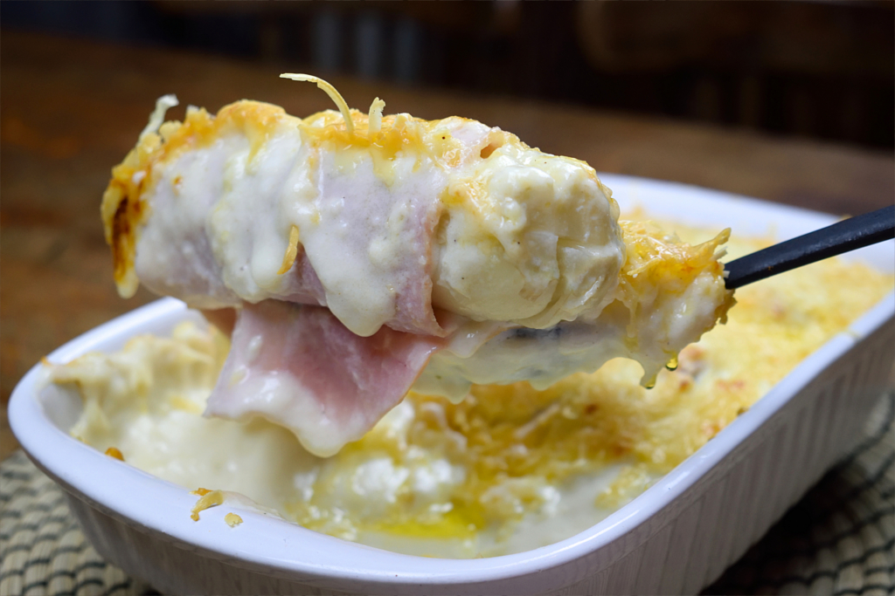

Witlof met ham en kaas
chicory with ham and cheese

Witlof with ham and cheese is not really a dutch dish, but a belgian dish. Nontherless it is still a populair dish in the Netherlands. Maybe this isn't very healty, but sure it taste good!
Ingredients
- 4 heads of chicory
- slices of ham
- 40 gram butter
- 50 gram plain flour
- 250 ml full-fat milk
- 100 gram grated cheese (Gouda)
- Nutmeg
- Salt and pepper to taste
Steps
- Pre-heat your oven to a temperature of 180 degrees Celsius or 356 degrees Fahrenheit.
- Clean the heads of the chicory and remove any sand and dirty leaves.
- Pour water in the medium-sized pan and let come to a boil.
- Boil the heads of chicory for 10 minutes, or until al dente. Pay attention to this, otherwise, you'll end up with a pan full of over-cooked chicory. Time can vary depending on the thickness.
- Remove from the pan, drain and let cool off to room temperature.
We've used a sieve for this since that will allow the heads of the chicory to cool off much faster. When cooled off, squeeze out much of the left-over water. Do this gently and use both hands for this, make sure not to break it.
- Using a paring knife, remove the ends.
- Melt the butter in a small saucepan on medium-low heat, then add in the flour.
- Stir using the wooden spoon until a roux appears. This is basically flour and fat cooked together, and we're going to use it to thicken the cheese sauce.
- Season with some salt, pepper and (freshly grated) nutmeg. STIR in the cheese, this must be a cheese that melts easily, like Gouda cheese. Turn off the heat.
- Grease the oven dish with butter, wrap 1 or 2 slices of ham around each cooked head of chicory. Depending on the thickness and how much meat you would like add more or fewer slices of ham. It's all up to you!
- Place the ham-wrapped chicory into the oven baking tray. Repeat for the other 3 heads of chicory. Add more cheese on top if preferred.
- Pour over the cheese sauce and bake the dish in the oven for 20 minutes.
Back home